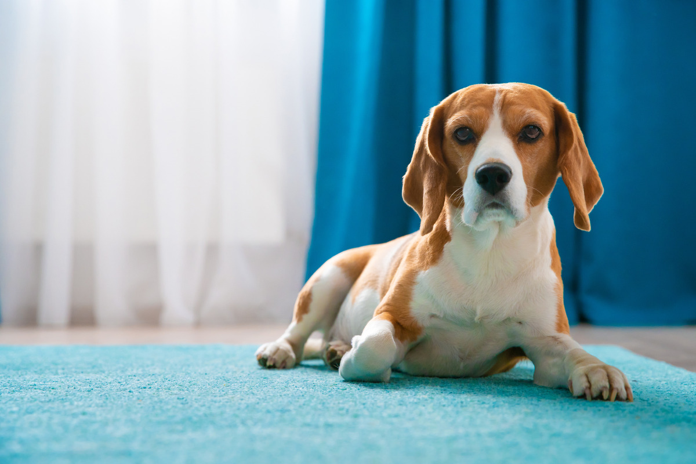
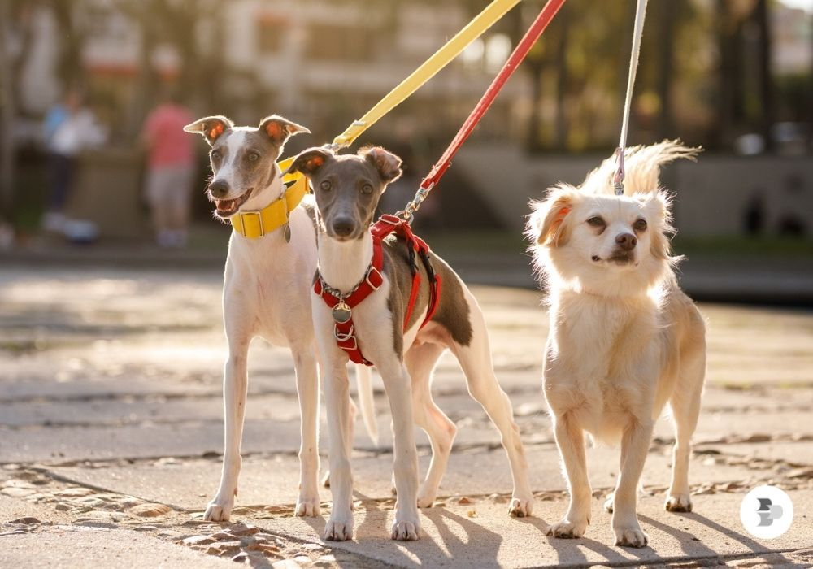

Qual raça é a sua preferida ? ?
Os Golden Retrievers são uma raça de cães conhecida por sua natureza amigável, inteligente e leal. Eles têm um pelo denso e impermeável, que varia em tonalidades de dourado claro a dourado escuro. Esses cães são muito sociáveis e se dão bem com crianças e outros animais, o que os torna ótimos companheiros de família. Além disso, são altamente treináveis e frequentemente utilizados em funções de assistência, como cães-guia e em terapias. Os Golden Retrievers precisam de exercícios regulares e gostam de atividades ao ar livre, como caminhadas e jogos de busca. Sua personalidade carinhosa e brincalhona faz deles uma das raças mais populares em todo o mundo!?
Os Dachshunds são conhecidos por sua personalidade ousada e curiosa. Eles são bastante leais e protetores com suas famílias, mas podem ser um pouco reservados com estranhos. Apesar de seu tamanho pequeno, têm uma grande personalidade e são conhecidos por serem teimosos, o que pode tornar o treinamento um desafio, mas também muito divertido.
Eai depois desses fatos qual raça você prefere ?

Quais são as principais semelhanças e diferenças culturais entre as duas raças?

A coleira é um acessório essencial para a segurança e o bem-estar do cachorro. Ela ajuda no controle durante passeios, evitando que o animal fuja ou se envolva em situações perigosas. Além disso, pode ser usada para treinar o cão, corrigindo comportamentos indesejados de forma positiva. Algumas coleiras também permitem a identificação do pet, com plaquinhas contendo nome e contato do tutor, facilitando a localização em caso de perda. Existem diferentes tipos de coleiras, cada uma adequada para diferentes necessidades e temperamentos do cachorro.

Maria Clara Coeiradas🧡